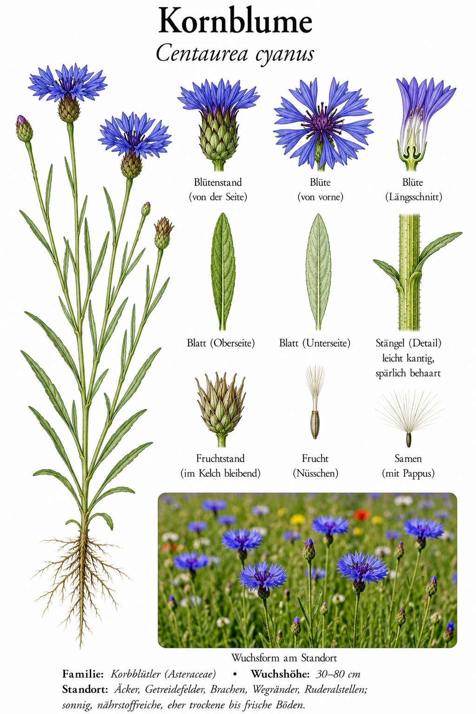

Das leuchtende Blau der Kornfelder — heute selten geworden.

Blau wie kein zweites
Kaum eine heimische Blüte ist so rein blau wie die Kornblume. Früher wuchs sie zu Tausenden zwischen Roggen und Weizen — das „Korn“ im Namen verrät ihren Lieblingsplatz. Die äußeren Blüten sind trichterförmig vergrößert und wirken wie kleine Strahlenkränze.
Vom Allerweltskraut zur Seltenheit
Mit Spritzmitteln und sauberem Saatgut verschwand die Kornblume fast völlig aus den Feldern. Heute freut man sich über jedes Vorkommen und sät sie gezielt in Blühstreifen wieder aus. 2019 wurde sie sogar zur „Blume des Jahres“ gewählt.
Wissenswertes & Merksätze
Erkennungszeichen
Schlanke, oft etwas sparrige Pflanze; leuchtend blaue Körbchen mit auffällig vergrößerten Randblüten. Blätter schmal-lanzettlich und graugrün.
Kaiser, Dichter und blaue Tinte
Die Romantiker machten die „blaue Blume“ zum Sehnsuchtssymbol, und Kaiser Wilhelm I. erklärte die Kornblume zu seiner Lieblingsblume. Aus den Blütenblättern lässt sich sogar ein blauer Farbstoff gewinnen.